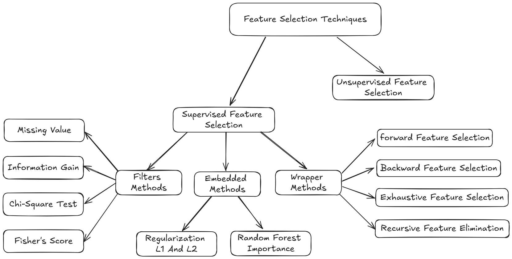
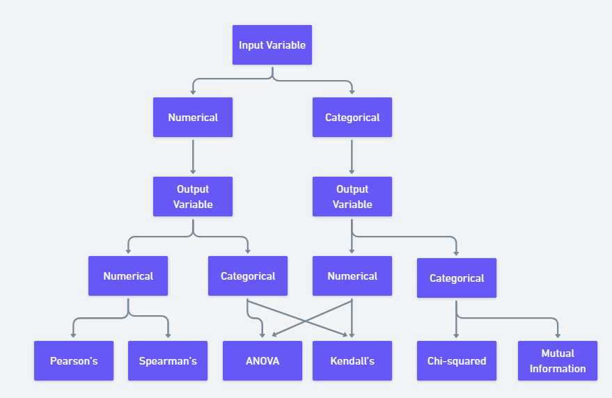

Feature Selection Techniques in Machine Learning
Feature selection is a way of selecting the subset of the most relevant features from the original features set by removing the redundant, irrelevant, or noisy features.
- While developing the machine learning model, only a few variables in the dataset are useful for building the model, and the rest features are either redundant or irrelevant.
- If we input the dataset with all these redundant and irrelevant features, it may negatively impact and reduce the overall performance and accuracy of the model.
- Hence it is very important to identify and select the most appropriate features from the data and remove the irrelevant or less important features, which is done with the help of feature selection in machine learning.

Let’s first understand some basics of feature selection.
- What is Feature Selection?
- Need for Feature Selection
- Feature Selection Methods/Techniques
- Feature Selection statistics
What is Feature Selection?
A feature is an attribute that has an impact on a problem or is useful for the problem, and choosing the important features for the model is known as feature selection.
Each machine learning process depends on feature engineering, which mainly contains two processes; which are Feature Selection and Feature Extraction. Although feature selection and extraction processes may have the same objective, both are completely different from each other.
- The main difference between them is that feature selection is about selecting the subset of the original feature set, whereas feature extraction creates new features.
- Feature selection is a way of reducing the input variable for the model by using only relevant data in order to reduce overfitting in the model.
So, we can define feature Selection as, “It is a process of automatically or manually selecting the subset of most appropriate and relevant features to be used in model building.” Feature selection is performed by either including the important features or excluding the irrelevant features in the dataset without changing them.
Need for Feature Selection
As we know, in machine learning, it is necessary to provide a pre-processed and good input dataset in order to get better outcomes. We collect a huge amount of data to train our model and help it to learn better.
Generally, the dataset consists of noisy data, irrelevant data, and some part of useful data.
Moreover, the huge amount of data also slows down the training process of the model, and with noise and irrelevant data, the model may not predict and perform well.
So, it is very necessary to remove such noises and less-important data from the dataset and to do this, and Feature selection techniques are used.
Selecting the best features helps the model to perform well. For example, Suppose we want to create a model that automatically decides which car should be crushed for a spare part, and to do this, we have a dataset. This dataset contains a Model of the car, Year, Owner’s name, Miles. So, in this dataset, the name of the owner does not contribute to the model performance as it does not decide if the car should be crushed or not, so we can remove this column and select the rest of the features(column) for the model building.
Below are some benefits of using feature selection in machine learning: - It helps in avoiding the [[Curse of Dimensionality]]. - It helps in the simplification of the model so that it can be easily interpreted by the researchers. - It reduces the training time. - It reduces overfitting hence enhance the generalization.
Feature Selection Techniques
There are mainly two types of Feature Selection techniques, which are: - Supervised Feature Selection technique Supervised Feature selection techniques consider the target variable and can be used for the labelled dataset. - Unsupervised Feature Selection technique Unsupervised Feature selection techniques ignore the target variable and can be used for the unlabeled dataset.

There are mainly three techniques under supervised feature Selection:
1. Wrapper Methods
In wrapper methodology, selection of features is done by considering it as a search problem, in which different combinations are made, evaluated, and compared with other combinations. It trains the algorithm by using the subset of features iteratively.

On the basis of the output of the model, features are added or subtracted, and with this feature set, the model has trained again.
Some techniques of wrapper methods are:
Forward selection: Forward selection is an iterative process, which begins with an empty set of features. After each iteration, it keeps adding on a feature and evaluates the performance to check whether it is improving the performance or not. The process continues until the addition of a new variable/feature does not improve the performance of the model. ^71dca8
Backward elimination: Backward elimination is also an iterative approach, but it is the opposite of forward selection. This technique begins the process by considering all the features and removes the least significant feature. This elimination process continues until removing the features does not improve the performance of the model.
Exhaustive Feature Selection: Exhaustive feature selection is one of the best feature selection methods, which evaluates each feature set as brute-force. It means this method tries & make each possible combination of features and return the best performing feature set.
Recursive Feature Elimination: Recursive feature elimination is a recursive greedy optimization approach, where features are selected by recursively taking a smaller and smaller subset of features. Now, an estimator is trained with each set of features, and the importance of each feature is determined using coef_attribute or through a _feature_importances_attribute.
2. Filter Methods
In Filter Method, features are selected on the basis of statistics measures. This method does not depend on the learning algorithm and chooses the features as a pre-processing step.
The filter method filters out the irrelevant feature and redundant columns from the model by using different metrics through ranking.
The advantage of using filter methods is that it needs low computational time and does not overfit the data.

Some common techniques of Filter methods are as follows:
Information Gain: Information gain determines the reduction in entropy while transforming the dataset. It can be used as a feature selection technique by calculating the information gain of each variable with respect to the target variable.
Chi-square Test: Chi-square test is a technique to determine the relationship between the categorical variables. The chi-square value is calculated between each feature and the target variable, and the desired number of features with the best chi-square value is selected.
Fisher’s Score: Fisher’s score is one of the popular supervised technique of features selection. It returns the rank of the variable on the fisher’s criteria in descending order. Then we can select the variables with a large fisher’s score.
Missing Value Ratio: The value of the missing value ratio can be used for evaluating the feature set against the threshold value. The formula for obtaining the missing value ratio is the number of missing values in each column divided by the total number of observations. The variable is having more than the threshold value can be dropped.
\[\text{Missing Value Ratio} = \frac{\text{Number of Missing Values} \times 100}{\text{Total Number of Observations}} \]
3. Embedded Methods
Embedded methods combined the advantages of both filter and wrapper methods by considering the interaction of features along with low computational cost. These are fast processing methods similar to the filter method but more accurate than the filter method.

These methods are also iterative, which evaluates each iteration, and optimally finds the most important features that contribute the most to training in a particular iteration. Some techniques of embedded methods are:
Regularization: Regularization adds a penalty term to different parameters of the machine learning model for avoiding overfitting in the model. This penalty term is added to the coefficients; hence it shrinks some coefficients to zero. Those features with zero coefficients can be removed from the dataset. The types of regularization techniques are L1 Regularization (Lasso Regularization) or Elastic Nets (L1 and L2 regularization).
Random Forest Importance: Different tree-based methods of feature selection help us with feature importance to provide a way of selecting features. Here, feature importance specifies which feature has more importance in model building or has a great impact on the target variable. Random Forest is such a tree-based method, which is a type of bagging algorithm that aggregates a different number of decision trees. It automatically ranks the nodes by their performance or decrease in the impurity (Gini impurity) over all the trees. Nodes are arranged as per the impurity values, and thus it allows to pruning of trees below a specific node. The remaining nodes create a subset of the most important features.
How to choose a Feature Selection Method?
For machine learning engineers, it is very important to understand that which feature selection method will work properly for their model. The more we know the datatypes of variables, the easier it is to choose the appropriate statistical measure for feature selection.

To know this, we need to first identify the type of input and output variables. In machine learning, variables are of mainly two types:
Numerical Variables: Variable with continuous values such as integer, float
Categorical Variables: Variables with categorical values such as Boolean, ordinal, nominals.
Below are some univariate statistical measures, which can be used for filter-based feature selection:
Numerical Input, Numerical Output: Numerical Input variables are used for predictive regression modelling. The common method to be used for such a case is the Correlation coefficient.
- Pearson’s correlation coefficient (For linear Correlation).
- Spearman’s rank coefficient (for non-linear correlation).
Numerical Input, Categorical Output: Numerical Input with categorical output is the case for classification predictive modelling problems. In this case, also, correlation-based techniques should be used, but with categorical output.
- ANOVA correlation coefficient (linear).
- Kendall’s rank coefficient (nonlinear).
Categorical Input, Numerical Output: This is the case of regression predictive modelling with categorical input. It is a different example of a regression problem. We can use the same measures as discussed in the above case but in reverse order.
Categorical Input, Categorical Output: This is a case of classification predictive modelling with categorical Input variables.
The commonly used technique for such a case is Chi-Squared Test. We can also use Information gain in this case.
| Input Variable | Output Variable | Feature Selection technique |
|---|---|---|
| Numerical | Numerical | - Pearson’s correlation coefficient (For linear Correlation). - Pearson’s correlation coefficient (For linear Correlation) |
| Numerical | Categorical | - ANOVA correlation coefficient (linear). - Kendall’s rank coefficient (nonlinear). |
| Categorical | Numerical | - Kendall’s rank coefficient (linear). - ANOVA correlation coefficient (nonlinear). |
| Categorical | Categorical | - Chi-Squared test (contingency tables). - Mutual Information. |